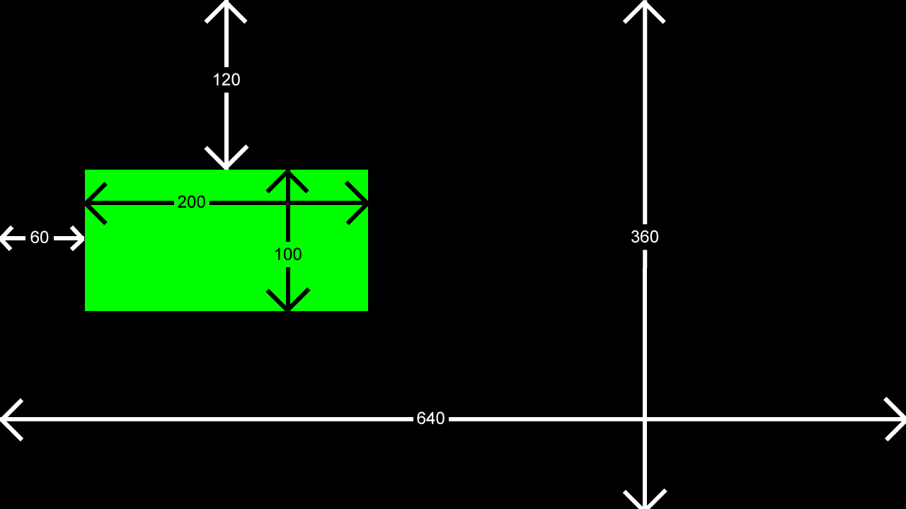

Chapter 3 - Introduction to computer graphics using Pixi.js
Almost every video game needs to display something to the screen so that the player can see and interact with the game (the Latin root word of video – videre, means to see). In this article we’ll explain the basics of display systems and how to draw basic shapes on the screen. These basic shapes will be the fundamental building blocks of all interactive elements in any video game.
JavaScript on the web offers many different ways of drawing 2D shapes and graphics on the screen, but one of the best ways to do it is by using the pixi.js library. We can install pixi.js by typing the following command in the terminal:
npm install pixi.jsOnce the installation is complete, delete the existing code from the index.js file and replace it with the following:
import * as PIXI from 'pixi.js'
let app = new PIXI.Application({ width: 640, height: 360 });
document.body.appendChild(app.view);
let obj = new PIXI.Graphics();
obj.beginFill(0x00FF00);
obj.drawRect(60, 120, 200, 100);
app.stage.addChild(obj);Every time we make a change to the JavaScript code, we have to run Webpack to create a fresh bundle. As a reminder, the command is:
npx webpackIf Webpack runs successfully, you will see something like the following on your screen:
Congratulations, we've created our first PIXI scene! While a green square in a black background might not seem impressive at first, it means that the preparatory steps are complete and we're ready for the good stuff. In the game development industry this is sometimes called a black triangle moment.
Let's examine what we just showed the screen, starting with the code:
In line 1, we are importing pixi.js into our game. pixi.js was installed earlier using npm, and once imported we have access to it through the PIXI variable.
In line 3, we're creating an instance of a PIXI application, and passing an options object, in particular this options object has two important properties, width and height. These properties set the drawing area of the PIXI application to be 640 pixels wide and 360 pixels tall.
In line 4, we're adding the Pixi application we just added to the end of our HTML document. Note that the appendChild() method is available to most HTML elements, so we can easily place the Pixi application anywhere on the page, not just at the end (left as an exercise to the reader).
In line 6, we're creating an instance of a PIXI.Graphics class, which is then used to draw geometric shapes on the screen. Regardless of how many shapes we want to draw, we will only need one instance of this class.
In line 7, we set the fill color of all subsequent shapes to a bright green. The color argument is given in hexadecimal format,
which is widely used both in web development but also in graphic design. In the
0x00FF00
number, the first two symbols, 0x, indicate that
this is a hexadecimal number, the the two symbols, 00 indicate zero brightness on the red color,
after that, the next two symbols, FF, indicate maximum brightness of the green color, and the final
two symbols, 00, indicate zero brightness on the blue color.
In line 8, we draw the green rectangle. The four parameters are essential in positioning the rectangle in the scene. In computer graphics, pixels are counted from the top-left, or in mathematical terms, the origin of the coordinate system is the top-left, and every other pixel is referred to in relation to this origin point. In particular, the rectangle is set to be 60 pixels to the right and 120 pixels to the bottom of the origin, and is set to be 200 pixels wide and 100 pixels tall. Have a look at the image below for a visual aid in how this looks in practice:
Finally in line 9, we add the graphics instance into the PIXI stage. The PIXI stage is an instance of the PIXI.Container class, which is used to organize graphical objects, and is broadly analogous to the <div> tag in HTML.
In the next chapter, we'll set up the game loop, a fundametal component of game programming.